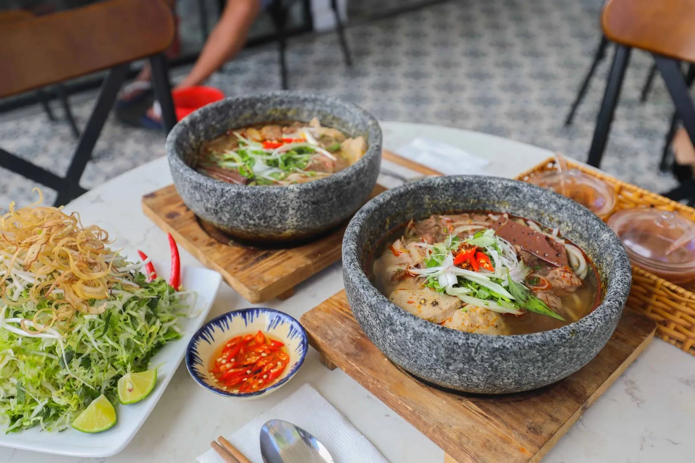

Top 30 breakfast restaurants in Da Lat that are loved by tourists

Table of Contents
- 1. Have breakfast in Da Lat with beef noodle soup in Doan Vien stone bowl
- 2. Shumai bread - Famous breakfast dish in Da Lat at 37 Hoang Dieu
- 3. An snakehead fish soup cake - Breakfast in Da Lat with Central taste
- 4. Experience hot pan bread when having breakfast in Da Lat at Icolor
- 5. Nha Shin's Quang Noodles - The taste of Quang in the heart of Da Lat for a complete breakfast
- 6. Have breakfast in Hoa Binh Da Lat area - Morning food paradise
- 7. Auntie Canh's vermicelli noodles - A simple yet delicious breakfast dish in Da Lat
- 8. Hue Thien Trang beef noodle soup - Breakfast in Da Lat has a strong Central flavor
- 9. Noodles mixed with peach eggs - A strange breakfast experience in Da Lat
- 10. Nhan Ngai Banh Mi - A famous breakfast restaurant in Da Lat for a long time
- 11. Husband Wet Cake – Breakfast option in Da Lat ideal for a group of friends
- 12. Pho 65 – The quintessence of Hanoi Thin Pho for mornings in Da Lat
- 13. Hong chicken noodle soup - Breakfast dish in Da Lat that is difficult to find elsewhere
- 14. Huong Quan - A breakfast address in Da Lat that is loved by local people
- 15. Banh Mi 27 – Breakfast restaurant in Da Lat for Western Vietnamese food lovers
- 16. Pho Uyen - This breakfast pho restaurant in Da Lat has been popular for many years
- 17. Gia Cat noodle soup - Spacious and clean breakfast destination in Da Lat
- 18. Chicken intestine wet cake 28 Tang Bat Ho - Famous breakfast dish in Da Lat
- 19. Pho Chu Gia - Experience unique Da Lat breakfast pho in a stone bowl
- 20. Thanh Thuy Coffee - Breakfast cafe in Da Lat with view of Xuan Huong lake
- 21. Xoi Xeo Co Ba - Da Lat rustic breakfast restaurant, rich in Northern flavors
- 22. Ba Huong's banh beo - More than 50 years of preserving the old flavor
- 23. Hoa Tran Chicken Vermicelli – Rich flavor for chilly mornings
- 24. Bag Mo To Coffee Shop - A poetic place to start a new day
- 25. Vinh Loi Noodles – A heartwarming bowl of char siu noodles every morning
- 26. Cafe Moc - Taste of home in the heart of Da Lat
- 27. Pho Chat – Delicious pho, rustic space
- 28. Singapore Frog Porridge - Strange dish in the heart of the mountain town
- 29. Chao Long 5A - Famous porridge restaurant in Da Lat
- 30. Chinese Wonton Noodles - A long-standing restaurant with a strong Chinese character
When the morning mist still lingers on the rooftops, Da Lat appears peaceful and poetic - it is also the ideal time to enjoy a proper breakfast in Da Lat. Starting a new day in Da Lat with attractive breakfast dishes, from familiar traditional dishes to unique variations, is an indispensable experience for any tourist.
Not simply having breakfast, this is also a moment to fully feel the flavor and breath of the city of flowers. Under the typical cold weather, each Da Lat breakfast dish seems to carry a love and unique quality that is hard to match anywhere else. Let breakfast become a memorable highlight in your journey to discover Da Lat.
1. Have breakfast in Da Lat with beef noodle soup in Doan Vien stone bowl
Address:29B Tran Phu, Ward 4
Opening hours:06:00 – 15:45
Price:65,000 – 120,000 VND
An ideal choice for breakfast in Da Lat is hot Hue beef noodle soup in stone bowl at Doan Vien restaurant. A rich bowl of vermicelli, tender fragrant meat and sweet broth will warm your heart in the cold weather.
2. Shumai bread - Famous breakfast dish in Da Lat at 37 Hoang Dieu
Address:26 & 37 Hoang Dieu, Ward 5
Opening hours:06:00 – 09:00
Price:15,000 VND
Shumai sandwichat 37 Hoang Dieu, Da Lat, has long been a familiar destination for those who are passionate about cuisine here. With an affordable price and rich flavor, this dish easily conquers diners right from the first taste. The crispy bread on the outside combines harmoniously with hot shumai and delicious slices of pork sausage, all creating an ideal breakfast in the cold weather of Da Lat.
3. An snakehead fish soup cake - Breakfast in Da Lat with Central taste
Address:23/2 Tran Phu, Ward 3
Opening hours:06:30 – 19:00
Price:15,000 – 30,000 VND
The highlight of An restaurant is the blend of airy space and agile, professional service style. Snakehead fish at the restaurant is carefully selected and processed directly, ensuring freshness in each bowl of noodle soup. That is what makes snakehead fish soup here an attractive choice for breakfast in Da Lat.
4. Experience hot pan bread when having breakfast in Da Lat at Icolor
Address:23/2 Dang Thai Than, Ward 3
Opening hours:07:00 – 11:00
Price:45,000 – 65,000 VND
Enjoying breakfast at Icolor restaurant in Da Lat, you will experience hot pan bread, combined with rich shumai sauce. Amid the chilly weather typical of the city of flowers, the dish brings a feeling of warmth and full flavor in every bite. With a variety of toppings such as pate, sausage, shumai and crispy bread, the breakfast here is not only delicious but also full of nutrition.
5. Nha Shin's Quang Noodles - The flavor of Quang in the heart of Da Lat for a complete breakfast
Address:209 Nguyen Cong Tru, Ward 2
Opening hours:06:00 – 14:00 (Tuesday–Sunday), 09:00 – 17:00 (Monday)
Price:25,000 – 40,000 VND
Nha Shin Quang Noodles is one of the unique breakfast dishes in Da Lat, imbued with the traditional flavors of Quang Nam cuisine. The restaurant was opened by a Quang-origin owner, thanks to which the flavor always remains standard and rich. Diners coming here can choose from many attractive variations such as Quang beef noodles, chicken, frog, snakehead fish or eel - all of which are carefully prepared, suitable for diverse tastes.
6. Have breakfast in Hoa Binh Da Lat area - Morning food paradise
6.1 Trang chicken wet cake

Address:15F Tang Bat Ho & 3B Mai Son Trang
Opening hours:06:00 – 18:00
Price:30,000 – 66,000 VND
It is not an exaggeration to say that chicken intestine wet cake has become one of the typical dishes of Da Lat cuisine. Visit Trang restaurant in the morning, you will enjoy a plate of soft, moist cakes, served with sweet and aromatic shredded chicken and attractive crispy chicken intestines. The chicken here is moderately chewy, not crumbly, skillfully seasoned, mixed with rich fish sauce, creating an unforgettable flavor for diners.
6.2 Pho Hieu – Breakfast option in Da Lat near the center

Address:103 Nguyen Van Troi
Opening hours:06:00 – 20:30
Price:20,000 – 80,000 VND
Located near the center of Da Lat, Pho Hieu restaurant is an ideal stop for breakfast, lunch or dinner. The menu is rich with options such as rare beef pho, tendon, fried, and mixed, each bowl has a rich, harmonious flavor. The broth is clear, sweet and not too fatty, creating a pleasant feeling when enjoying. An interesting point here is that you can eat it with quiche - a novel but extremely attractive combination.
6.3 Tung Cafe – Nostalgic space for a relaxing morning

Address:6 Hoa Binh area
Opening hours:07:00 – 21:30
Price:15,000 – 55,000 VND
Tung Cafe offers a unique culinary experience for breakfast in Da Lat. Not only famous for its unique coffee flavor, the shop also serves quality dishes, helping diners recharge for their exciting journey to explore the city of flowers.
If you're wondering what to eat for breakfast in Da Lat, noodles mixed with soft-boiled eggs are definitely a dish you should try. The noodle dish at the restaurant is attractive because of the harmonious combination of flavorful char siu, tender shredded chicken, creamy soft eggs, crispy pork rinds and fresh green vegetables. In particular, the broth is simmered from fresh chicken, without using MSG, bringing a natural sweetness, making this breakfast restaurant unique.
Hong chicken noodle soup is a unique breakfast dish in Da Lat, impressing with the special toughness of the noodles, almost like vermicelli, creating a new feeling when enjoying. The broth is made from stewed chicken, with a gentle aroma and characteristic rich taste. The chicken at the restaurant is soft, fragrant, and the skin is lightly crispy, creating a wonderful harmony when eaten with noodles. When combined with fresh basil and cilantro, the dish becomes even more fragrant and attractive.
14. Huong Quan - Breakfast address in Da Lat loved by locals
Address:47B Tran Binh Trong, Ward 5, Da Lat
Opening hours:9:00 - 22:00
Price:20,000 – 60,000 VND
If you want to find a breakfast restaurant in Da Lat that meets local standards, Huong Quan is an option not to be missed. This place stands out with its unique chicken dish, Central Highlands specialties and breakfast with vermicelli and pho rich in fragrant broth. The cozy space is the plus point that attracts diners.
15. Banh Mi 27 – Breakfast restaurant in Da Lat for Western Vietnamese food lovers
Address:105 Nguyen Luong Bang, Ward 2, Da Lat
Opening hours:6:30 - 14:00
Price:20,000 - 30,000 VND
Banh Mi 27 is an attractive breakfast restaurant in Da Lat, only about 2km from the market. Each portion of pan bread here is filled with pate, eggs, beef, sausage... hot on a cast iron pan, suitable for both adults and children.
16. Pho Uyen – A breakfast pho restaurant in Da Lat that has been loved for many years
Address:10 Xo Viet Nghe Tinh, Ward 7, Da Lat
Opening hours:7:00 – 16:30
Price:25,000 – 35,000 VND
A steaming bowl of pho, sweet broth from the bones and tender, fragrant beef - that's what you will enjoy at Pho Uyen. This is a breakfast place in Da Lat that has been with residents and tourists for many years.
17. Gia Cat noodle soup – A spacious and clean breakfast destination in Da Lat
Address:221/9 Hai Ba Trung, Ward 6, Da Lat
Opening hours:6:00 - 22:00
Price:50,000 - 60,000 VND
Gia Cat noodle soup is a breakfast restaurant in Da Lat with an airy and clean space. The Nam Vang noodle bowl here is filled with toppings such as meat, shrimp, quail eggs... with two options: dry or liquid according to taste.
18. Moist chicken intestine cake at 28 Tang Bat Ho – Famous breakfast dish in Da Lat
Address:28 Tang Bat Ho, Ward 1, Da Lat
Opening hours:6:00 – 20:00
Price:35,000 – 120,000 VND
When it comes to breakfast in Da Lat, chicken nuggets are an indispensable dish. Restaurant 28 Tang Bat Ho is a prominent name with thin, smooth cake, tender chicken, rich dipping sauce and many attractive side dishes such as salad, porridge, and young eggs.
19. Pho Chu Gia – Experience unique Da Lat breakfast pho in a stone bowl
Address:29 Thong Thien Hoc, Ward 2, Da Lat
Opening hours:6:00 - 22:00
Price:60,000 – 130,000 VND
Unlike other breakfast restaurants in Da Lat, Pho Chu Gia offers an interesting experience when eating pho in a boiling stone bowl. Rare beef and fresh pho noodles are served separately, enhancing their unique flavor and keeping them hot longer.
20. Thanh Thuy Coffee - Breakfast cafe in Da Lat with view of Xuan Huong lake
Address:2 Nguyen Thai Hoc, Da Lat
Opening hours:6:30 - 22:00
Price:50,000 – 132,000 VND
Thanh Thuy Coffee is an ideal breakfast place in Da Lat for those who love the romantic scenery beside Xuan Huong Lake. The restaurant serves breakfast dishes such as pho, rib rice, fried dumplings... along with signature coffee, blended in a cool green space.